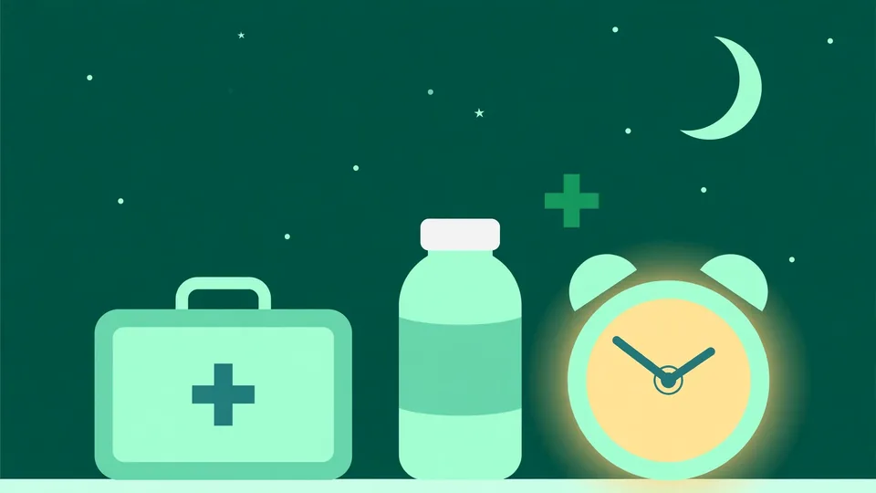

রাতের ফার্মেসি গাইড
ঢাকায় রাতে ওষুধ লাগলে কী করবেন, কোন ফার্মেসি কখন খোলা থাকে, যাওয়ার আগে কী যাচাই করবেন — সব গাইড এক জায়গায়। প্রতিটা তালিকা ৯৪টি যাচাই করা ফার্মেসির তথ্য থেকে বানানো।
-
রাতে খোলা ফার্মেসি ঢাকা — কীভাবে খুঁজবেন
২৪ ঘণ্টা খোলা ফার্মেসির তালিকা, রাত ১২টার পরেও খোলা দোকান আর যাওয়ার আগে যাচাই করার নিয়ম — সব এক পাতায়।
-
গুলশান ও বনানীতে রাতের ফার্মেসি
ভোর ৩টা পর্যন্ত খোলা ইসলামিয়া, ২৪ ঘণ্টার ইউনাইটেড হাসপাতাল — গুলশান-বনানীর রাতের ফার্মেসির তালিকা।
-
ধানমন্ডি ও মোহাম্মদপুরে রাতের ফার্মেসি
দুটো ২৪ ঘণ্টার ফার্মেসি, স্কয়ার-গ্রিন লাইফের হাসপাতাল ফার্মেসি — ধানমন্ডি-মোহাম্মদপুরের রাতের তালিকা।
-

মিরপুর ও উত্তরায় রাতের ফার্মেসি
লাজ ফার্মার মিরপুর-উত্তরা শাখা, শুক্রবার বন্ধ থাকা ফার্মেসির সতর্কতাসহ পুরো তালিকা।
-

রাতে জরুরি ওষুধ লাগলে কী করবেন
প্রেসক্রিপশন থেকে ২৪ ঘণ্টার ফার্মেসি — মাঝরাতে ওষুধ লাগলে ধাপে ধাপে কী করবেন।
-
ফার্মেসি খোলা আছে কিনা বোঝার উপায়
সময়, ফোন, হোয়াটসঅ্যাপ — ফার্মেসি খোলা আছে কিনা বোঝার ৫টি নির্ভরযোগ্য উপায়।